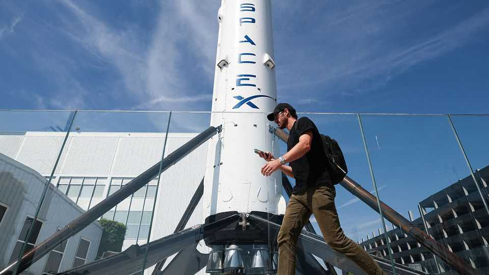

SpaceX’s Starlink expansion is a bold gamble on the future
Elon Musk is betting that robotics will dramatically increase demand for connectivity

Oct 15th 2026
Since it opened for business in 2021, Starlink has grown like Topsy. The satellite-internet service offered by Elon Musk’s SpaceX has signed up more than 12m individual subscribers, as well as a clutch of airlines and shipping firms. It also plays a crucial—and changing—role in the Ukraine war. More recently it has signed deals with big network operators such as T-Mobile in America to enable Starlink’s satellites to connect directly to their customers’ mobile phones, providing service in places outside the reach of land-based phone masts.
Mr Musk has yet bigger ambitions for the service. On October 8th SpaceX confirmed what many observers had long suspected: it will build a fully fledged mobile-phone network that will compete directly with those run by big incumbents. Markets seemed to take the idea seriously. The share prices of the three biggest American mobile operators—T-Mobile, AT&T and Verizon—fell sharply after the announcement. For now, the threat to their business is modest. But Mr Musk is betting that, in the roboticised future he envisions, Starlink will play a vital role.
Although precise details are scant, SpaceX’s plan seems to have three components. The first is to launch even more satellites. In its announcement, SpaceX said it had received approval from the Federal Communications Commission, an American regulator, to fly up to 15,000 satellites specifically designed to beam voice calls and data to smartphones on the ground.
But although satellites are good at offering widespread coverage, they are less good when it comes to serving cities, towns and other large concentrations of people efficiently. Each Starlink satellite has a fixed capacity, and, because they are in orbit, each spends only a tiny fraction of its time over a given place.
SpaceX is therefore also planning to build ground-based infrastructure—the second part of its plan. It intends to start adding “femtocells”—tiny mobile-phone masts—to the receiver dishes it sells to Starlink’s home-broadband customers. Those would turn each Starlink dish into a short-range mobile mast. And the firm intends to build conventional capacity using bigger mobile-phone masts, too.
To make that service work, SpaceX has also been investing in rights to use the radio spectrum—the third element of its plan. In 2025 the company spent $19.6bn acquiring bandwidth from EchoStar, a troubled satellite operator, for use on its mobile-phone satellites. In a separate statement on October 8th Grain Management, a telecoms-focused investment firm, said it was selling a slice of low-frequency spectrum to SpaceX, with rumours putting the price tag at $8bn. Lower frequencies are better at penetrating into buildings, a vital feature for any aspiring mobile-network provider.
What advantage SpaceX will have over incumbent networks is not clear. A phone contract guaranteed to work in the middle of the Alaskan wilderness sounds attractive on paper, and SpaceX may prefer to sell such a service directly rather than acting as an infrastructure provider for incumbents. But the evidence from SpaceX’s deal with T-Mobile suggests that customers are not yet willing to pay much for the service, notes Tim Farrar, a satellite-industry analyst. Srinivasan Gopalan, T-Mobile’s boss, noted in May that few customers had bought the satellite service, and said it accounted for 0.0002% of their total usage.
The incumbents are not standing still, either. A week before SpaceX’s move, AT&T, T-Mobile and Verizon launched a joint venture designed to let them pool their spectrum and buy satellite capacity from a set of different providers. The move was seen as a hedge against Starlink.
SpaceX’s telecoms play, however, is best viewed not as a grab for a share of the current market, but as a wager on the future. Speaking on an earnings call in August, Gwynne Shotwell, SpaceX’s chief operating officer, predicted that autonomous vehicles and humanoid robots—including those made by Tesla, another company controlled by Mr Musk—would “dramatically increase the demand for connectivity” in the years ahead. Running Tesla’s machines on SpaceX’s mobile network could provide both businesses with a competitive edge.
In the meantime, the expansion of Starlink adds yet more to SpaceX’s plate. It is developing Grok, an artificial-intelligence model, testing Starship, the biggest rocket ever made, building a gigantic launch complex in Louisiana, hoping to put data centres into space and working on a politically sensitive contract with NASA to provide a lunar lander for America’s Moon-exploration programme. The increasingly sprawling enterprise is burning through cash: it raised $86bn in a public listing in June, then issued $25bn in debt just weeks later, and has plans to borrow more. Starlink, the profit engine of SpaceX, currently helps to offset the losses in its other divisions. That makes Mr Musk’s latest gamble all the more audacious—and risky. ■